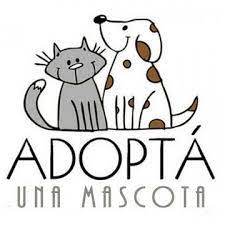

|
Es un website con fines de reubicación de mascotas que han sufrido maltrato y se encuentran en condición de calle, cuya finalidad es regalarle a estos nobles seres, la posibilidad de ser amados y cuidados.
Sabemos también que la familia de acogida disfrutará de la gratitud y el amor de una mascota.
Actuamos de intermediaro entre el rescatista y la nueva familia, somos conscientes de que la solución no es simplemente rescatar y dar en adopción, sino también concientizar a la sociedad sobre la importancia de tenencia responsable de mascotas,
cuyos debreres son: castración, cuidados médicos, alimentación y bienestar emocional de la misma.
Te compartimos gentilmente la siguiente cita de Ghandhi: “la grandeza de una nación y su progreso moral pueden ser juzgados por la forma en que se trata a sus animales”.
Dí NO al maltrato animal y adopta una mascota!
|

|